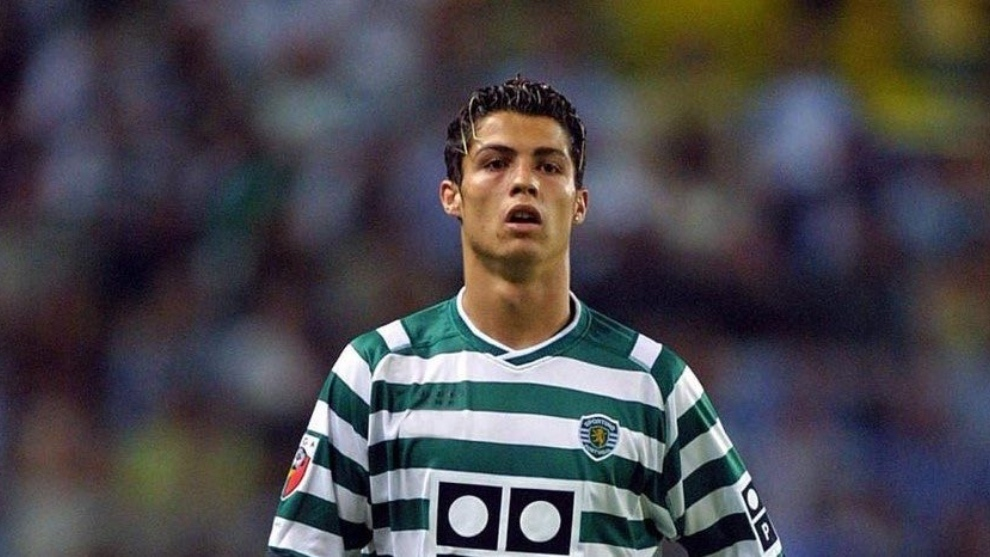

Sporting CP (1997-2003)
Cristiano Ronaldo began his professional football journey at Sporting CP, joining the club’s youth academy at the age of 12. Known for his exceptional speed, skill, and technique, he made his debut for Sporting's first team in 2002 at just 17 years old. During his time at the club, Ronaldo showcased his immense potential, scoring in his first league match and impressing with his dribbling and creativity. His standout performance in a friendly match against Manchester United in 2003 caught the attention of Sir Alex Ferguson, leading to his transfer to the English club and the start of his illustrious career on the global stage.